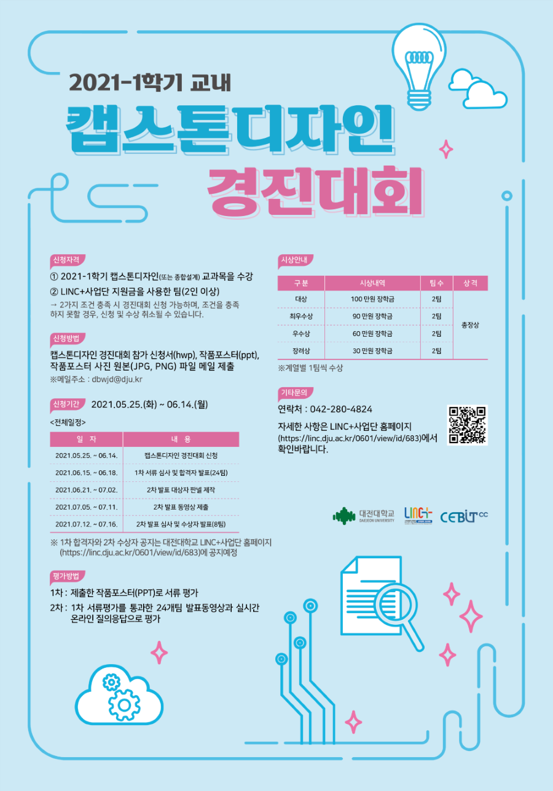

컴퓨터공학과 김민준
컴퓨터공학과 김민준

- 캡스톤 디자인 프로젝트
- 캡스톤 디자인 프로젝트

2학년 2학기 부터 캡스톤 프로젝트를 진행하면서 현장 실무와 프로그램에 대한 감을 익히면서 취업을 준비해야 한다.
2학년 2학기 부터 캡스톤 프로젝트를 진행하면서 현장 실무와 프로그램에 대한 감을 익히면서 취업을 준비해야 한다.
- 데이콘 사이트
- 데이콘 사이트
데이콘 사이트(https://dacon.io/)는 AI 데이터 분석 대회를 소게 해주는 사이트로 AI 관련 대회들도 소개를 해주고 참가자들의
소스가 공유되어 있어서 AI를 공부하면서 프로젝트를 준비하기 좋은 사이트이다.
데이콘 사이트(https://dacon.io/)는 AI 데이터 분석 대회를 소게 해주는 사이트로 AI 관련 대회들도 소개를 해주고 참가자들의 소스가 공유되어 있어서 AI를 공부하면서 프로젝트를 준비하기 좋은 사이트이다.